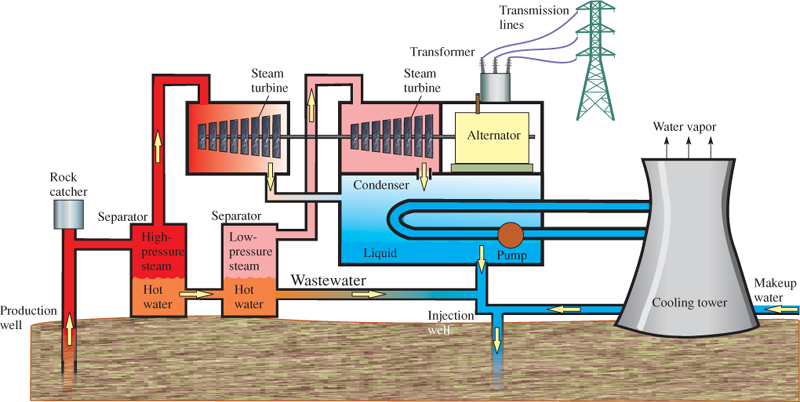
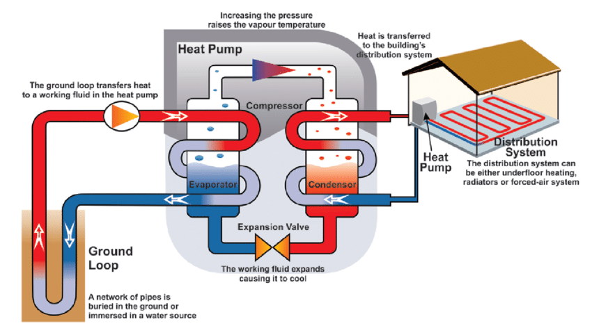

Geothermal Power
|  |
Basics of Geothermal PowerGeothhermal energyis heat that originates from the crust of the Earth. It is produced by plate tectonics, radioactive decay and the heat of the planet's formation. Geothermal power typically comes from steam turbines that are heated by the high temperatures of the Earth's core-mantle boundary. The water is typically not in contact with the Earth or the molten rock that heats it. Geothermal power systems use subterranean pipes to move the cold water into the heated area to superheat it. Once the water is hot enough, it flashes into steam and is directed into turbine generators; much like that heated water and steam in a nuclear reactor. When the steam has been moved through the turbine, it is returned to its liquid state by a cooling tower and recirculated through the system. Some geothermal power facilities inject water directly into the capture area and retrieve it at another point. The two types of systems are essentially the same, but an injected water system must screen the water for rocks and other debris, before circulating it through the turbines. The capture area may be a heated aquifer or a hotspring, but can also be a void in the Earth's crust. |
|||||||||||||||||||||||||||||||||||||||||||||||||||||||||||||||||||||||||||||||||||||||||||||||||||||||||||||||||||||||||||||||||||||||||||||||||||||||||||||||||||||||||||||||||||||||||||||||||||||||||||||||||||||||||||||||||||||||||||||||||||||||||||||||||||||||||||||||||||||||||||||||||||||||||||||||||||||||||||||||||||||||||||||||||||||||||||||||||||||||||||||||||||||||||||||||||||||||||||||||||||||||||||||||||||||||||||||||||||||||||||||||||||||||||||||||||||||||||||||||||||||||||||||||||||||||||||||||||||||||||||||||||||||||||||||||||||||||||||||||||||||||||||||||||||||||||||||||||||||||||||||||||||||||||||||||||||||||||||||||||||||||||
Geothermal HeatingGeothermal heating, while similar in concept to geothermal power generation, is a different process altogether. Instead of circulating water and steam through the ground and turbine generators, geothermal heating is a closed system that continuously reirculates the same water. Such systems don't reach temperatures capable of vaporizing water, because they are built at much shallower depths than a gethermal power facility. Geothermal heating systems are very efficient compared to typical HVAC systems. They require very little maintenance and do not burn any fuel, unlike furnaces and gas heating systems. As a result, they don't produce harmful fumes or present a fire risk. Since a geothermal heating system draws its heat from the ground, it can also provide cooling during the warmer months of the year. This allows a home or other structure to remain at a comfortable temperature year-round, with out expending much energy. |
||||||||||||||||||||||||||||||||||||||||||||||||||||||||||||||||||||||||||||||||||||||||||||||||||||||||||||||||||||||||||||||||||||||||||||||||||||||||||||||||||||||||||||||||||||||||||||||||||||||||||||||||||||||||||||||||||||||||||||||||||||||||||||||||||||||||||||||||||||||||||||||||||||||||||||||||||||||||||||||||||||||||||||||||||||||||||||||||||||||||||||||||||||||||||||||||||||||||||||||||||||||||||||||||||||||||||||||||||||||||||||||||||||||||||||||||||||||||||||||||||||||||||||||||||||||||||||||||||||||||||||||||||||||||||||||||||||||||||||||||||||||||||||||||||||||||||||||||||||||||||||||||||||||||||||||||||||||||||||||||||||||||||
SafetyGeothermal power is arguably one of the safest kinds of power generation. Its biggest danger is steam: the pressure and heat of the steam are dangerous, but steam is a material that is also very easy to handle in a safe manner. Accidents are unlikely and are typically caused by human errors; like a failure to inspect a facility or repair damage to machinery. |
||||||||||||||||||||||||||||||||||||||||||||||||||||||||||||||||||||||||||||||||||||||||||||||||||||||||||||||||||||||||||||||||||||||||||||||||||||||||||||||||||||||||||||||||||||||||||||||||||||||||||||||||||||||||||||||||||||||||||||||||||||||||||||||||||||||||||||||||||||||||||||||||||||||||||||||||||||||||||||||||||||||||||||||||||||||||||||||||||||||||||||||||||||||||||||||||||||||||||||||||||||||||||||||||||||||||||||||||||||||||||||||||||||||||||||||||||||||||||||||||||||||||||||||||||||||||||||||||||||||||||||||||||||||||||||||||||||||||||||||||||||||||||||||||||||||||||||||||||||||||||||||||||||||||||||||||||||||||||||||||||||||||||
Environmental ImpactGeothermal heating and geothermal power are both safe, effective and ecologically sound methods for power generation and climate control within human structures. They produce no emissions, and require no fuel. The only adverse environmental effect is an increased potential for earthquakes. This is caused by distruption of fault lines by the drilling and/or water injection processes. Such risks are easiy mitigated by drilling away from fault lines and closely monitoring circulation pressure. |
||||||||||||||||||||||||||||||||||||||||||||||||||||||||||||||||||||||||||||||||||||||||||||||||||||||||||||||||||||||||||||||||||||||||||||||||||||||||||||||||||||||||||||||||||||||||||||||||||||||||||||||||||||||||||||||||||||||||||||||||||||||||||||||||||||||||||||||||||||||||||||||||||||||||||||||||||||||||||||||||||||||||||||||||||||||||||||||||||||||||||||||||||||||||||||||||||||||||||||||||||||||||||||||||||||||||||||||||||||||||||||||||||||||||||||||||||||||||||||||||||||||||||||||||||||||||||||||||||||||||||||||||||||||||||||||||||||||||||||||||||||||||||||||||||||||||||||||||||||||||||||||||||||||||||||||||||||||||||||||||||||||||||